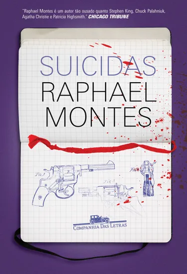
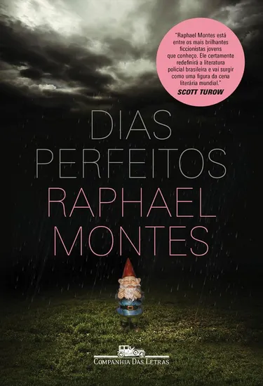
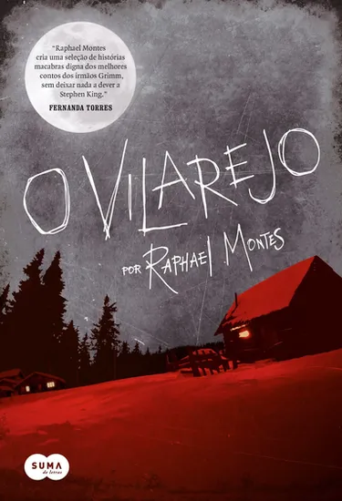
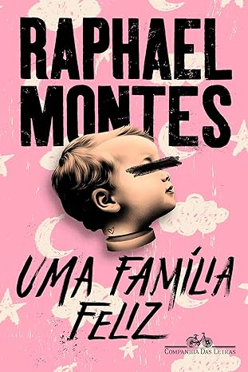

Sobre
Raphael Montes, nascido em 1990, no Rio de Janeiro, é conhecido por suas histórias de suspense, crime e terror. Escritor e roteirista, publicou os romances Suicidas, Dias perfeitos, O vilarejo, Jantar secreto e Uma mulher no escuro, vencedor do Prêmio Jabuti 2020. Seus livros estão traduzidos em mais de 25 países e têm os direitos de adaptação vendidos para o teatro e o cinema. Escreveu os filmes Praça Paris, A menina que matou os pais e O menino que matou meus pais. É criador, roteirista-chefe e produtor-executivo de Bom dia, Verônica, série de sucesso na Netflix, vencedora do Prêmio APCA 2020 nas categorias melhor ator, melhor atriz e melhor dramaturgia.
História e carreira
Raphael Montes estudou no tradicional Colégio de São Bento e formou-se em direito pela Universidade do Estado do Rio de Janeiro (UERJ). Começou a se interessar pela literatura ainda criança, quando sua tia-avó lhe deu de presente o livro Um estudo em vermelho, de Sir Arthur Conan Doyle. Após concluir a sua leitura, ele sentiu a necessidade de não somente continuar a consumir esse tipo de literatura, mas também de produzi-la. Em entrevista, Montes conta que começou a escrever contos curtos quando tinha cerca de 13 anos para seus colegas de sala, fato que o tornou popular em sua turma, pois os demais alunos sempre queriam saber a continuação da história. Além disso, na adolescência, escrevia fanfics com os personagens de Agatha Christie numa comunidade de fãs da escritora no Orkut.
Começou a carreira aos 18 anos, quando publicou contos em diversas antologias de mistério, como na Playboy (“Viúva Negra”) e na prestigiada revista americana Ellery Queen’s Mystery Magazine. Em 2010, publicou seu primeiro romance, Suicidas (ed. Benvirá), um suspense policial finalista do Prêmio Benvirá de Literatura 2010, do Prêmio Machado de Assis 2012 da Biblioteca Nacional e do prestigiado Prêmio São Paulo de Literatura 2013. Em 2017, Suicidas foi publicado em nova edição pela ed. Companhia das Letras, teve os direitos para cinema vendidos para a RT Features e uma adaptação teatral, com temporadas no Rio e em São Paulo.
Devido à indicação ao Prêmio São Paulo de Literatura, a editora Companhia das Letras entrou em contato com o autor para saber se ele tinha um novo romance para ser publicado. Raphael Montes respondeu que estava escrevendo Dias Perfeitos. Após esse contato, o livro foi publicado pouco após Raphael Montes concluir a graduação pela editora em questão. A obra foi lançada em mais de 14 países, incluindo Estados Unidos, Inglaterra, Espanha, Holanda, Itália e França. Esse romance, assim como Suicidas, teve os direitos vendidos para adaptação para o cinema. O sucesso dessa obra permitiu que Raphael Montes parasse de estudar para concursos públicos, sua principal atividade na época, e se dedicasse à literatura e cinema, um dos maiores sonhos de sua vida.
Obras literárias

Suicidas - 2012
O que levou um grupo de universitários da elite carioca a participar de uma roleta-russa? Um ano após a tragédia, que terminou de forma violenta e bizarramente misteriosa, a pergunta continua sem resposta. Até que surge uma informação que pode ajudar a resolver o caso conduzido pela delegada Diana Guimarães: um caderno narrando em detalhes a sequência estarrecedora dos fatos no porão. Além de perseguir a nova pista, Diana tem como maior desafio lidar com as mães dos adolescentes, reunidas para recompor uma história sombria e por vezes pouco enaltecedora à memória de seus filhos. Com base nas anotações feitas por Alessandro, um dos suicidas, conhecemos a história de cada um dos nove jovens cujas vidas pareciam destinadas a um futuro promissor. Por trás dos papéis de estudantes universitários aplicados e de filhos exemplares, revela-se uma trama chocante, com segredos, desejos reprimidos e excessos de toda ordem. Neste suspense engenhoso, em que as máscaras sociais aos poucos saem de cena para dar lugar a verdades cruéis, aparência e realidade se confundem até o último e surpreendente instante. 
Dias Perfeitos - 2014
O protagonista do livro é Téo, um jovem e solitário estudante de medicina que divide seu tempo entre cuidar da mãe paraplégica e dissecar cadáveres nas aulas de anatomia. Num churrasco a que vai com a mãe contrariado, Téo conhece Clarice, uma jovem de espírito livre que sonha tornar-se roteirista de cinema. De súbito, Téo fica viciado em Clarice, e começa a se aproximar de forma insistente. Diante das seguidas negativas, opta por uma atitude extrema: desfere um golpe na cabeça dela e, ato contínuo, sequestra a garota. 
O Vilarejo - 2015
Em 1589, o padre e demonologista Peter Binsfeld fez a ligação de cada um dos pecados capitais a um demônio, supostamente responsável por invocar o mal nas pessoas. É a partir daí que Raphael Montes cria sete histórias situadas em um vilarejo isolado, apresentando a lenta degradação dos moradores do lugar, e pouco a pouco o próprio vilarejo vai sendo dizimado, maculado pela neve e pela fome. As histórias podem ser lidas em qualquer ordem, sem prejuízo de sua compreensão, mas se relacionam de maneira complexa, de modo que ao término da leitura as narrativas convergem para uma única e surpreendente conclusão.
Jantar Secreto - 2016
Um grupo de jovens deixa uma pequena cidade no Paraná para viver no Rio de Janeiro. Eles alugam um apartamento em Copacabana e fazem o possível para pagar a faculdade e manter vivos seus sonhos de sucesso na capital fluminense. Mas o dinheiro está curto e o aluguel está vencido. Para sair do buraco e manter o apartamento, os amigos adotam uma estratégia heterodoxa: arrecadar fundos por meio de jantares secretos, divulgados pela internet para uma clientela exclusiva da elite carioca. A partir daí, eles se envolvem em uma espiral de crimes, descobrem uma rede de contrabando de corpos, matadouros clandestinos e grã-finos excêntricos, e levam ao limite uma índole perversa que jamais imaginaram existir em cada um deles.
Bom Dia, Verônica - 2016 (ed. Darkside)
Verônica Torres trabalha no Departamento de Homicídios e de Proteção à Pessoa, da Polícia Civil em São Paulo. É secretária de Carvana, um delegado pouco confiável, e filha de um respeitado policial, que teve um fim trágico e não totalmente esclarecido. Verônica está afastada de qualquer tipo de investigação, mas, ao presenciar o suicídio de uma mulher em seu trabalho, a fragilidade da vítima e as estranhas circunstâncias que a levaram à delegacia a colocam na trilha de um abusador com requintes de crueldade. Quando recebe uma ligação anônima de uma mulher desesperada, ela seguirá as pistas de uma série de crimes ainda mais sombrios. Janete é uma dona de casa devotada, que obedece Brandão, seu marido, pelo absoluto terror que nutre por ele. Policial militar, ele está acima do bem e do mal e pratica crimes sexuais de extrema violência e sadismo, em que ela é obrigada a participar – primeiro, aliciando mulheres; depois, acompanhando o desenrolar de suas mortes. As vidas de Verônica e Janete se entrecruzam e as levam aos limites da violência e da loucura. Ao narrar suas histórias, Ilana Casoy e Raphael Montes criam um thriller sem paralelos na literatura policial brasileira, com uma trama complexa – e uma investigadora inesquecível.
Uma Mulher No Escuro - 2019
Victoria Bravo tinha quatro anos quando um homem invadiu sua casa e matou toda a sua família. Única sobrevivente, ela se tornou uma jovem solitária e tímida, com pesadelos frequentes e sérias dificuldades para se relacionar. Seu refúgio é observar a vida alheia pelas janelas do apartamento onde mora, na Lapa, Rio de Janeiro. Mas o passado está à espreita, e ela não sabe mais em quem acreditar. Forçada a enfrentar a própria tragédia, Victoria embarca numa jornada de descoberta que a levará a zonas obscuras, mas também revelará as possibilidades do amor. Um psiquiatra, um amigo virtual e um possível namorado, qual deles está usando tudo o que sabe sobre Vic para aterrorizá-la? E o que afinal ele quer com ela?
A Mágica Mortal: Uma aventura do Esquadrão Zero - 2023
No mundo da mágica, nem tudo é o que parece. Pedro sabe disso muito bem, afinal, sempre foi fascinado por ilusionismo. Só não imaginava que ia entrar para valer nesse universo por causa de um crime terrível. Depois que seu melhor amigo é vítima de um mágico sinistro, Pedro decide encontrar o culpado a qualquer custo. Assim, o garoto reúne Pipa, Analu e Miloca, seus amigos de escola, para formar o Esquadrão Zero ― e juntos desvendarem o caso. Não demora para o criminoso fazer novas vítimas, sempre utilizando números de mágica famosos. Em uma corrida contra o tempo, os quatro jovens investigadores terão de cruzar a cidade numa aventura que envolve ilusionistas excêntricos, livros eletrizantes e um castelo imponente. Será que o grupo conseguirá descobrir quem é o mágico assustador antes que ele realize seu próximo truque? 
Uma Família Feliz - 2024
Eva tem a vida perfeita. Seu marido é um jovem advogado em ascensão. Suas filhas gêmeas são lindas, inteligentes e saudáveis. Seu trabalho, a arte reborn, é um sucesso na internet. À sua volta, tudo está à mão: o Blue Paradise, condomínio fechado de classe média-alta na Barra da Tijuca, oferece todo tipo de serviço para que ela não precise sair do conforto de seu lar. Eva tem a vida perfeita ― até descobrir que está grávida e seu mundo virar de cabeça para baixo. Conhecido por seus suspenses de tirar o fôlego, com mais de 500 mil exemplares vendidos, Raphael Montes inova ao começar este thriller psicológico pelo último capítulo. Assim, como uma bomba-relógio prestes a detonar, acompanhamos os caminhos surpreendentes e as tensões que levam essa família feliz a um final avassalador.Curiosidades
- Em 2012 lançou o seu primeiro romance, Suicidas, que foi finalista dos prêmios Benvirá. Mesmo não sendo o vencedor do prêmio, Thales Guaracy, editor da Benvirá na época, decidiu publicá-lo mesmo assim, por ter gostado muito da história e visto potencial no autor.
- Após o seu lançamento, o romance também foi finalista dos prêmios São Paulo e Biblioteca Nacional, sendo este último na categoria Machado de Assis (romance). Suicidas também ganhou adaptações para o teatro em 2015. Em entrevista, Montes comentou que escreveu o livro entre os seus 16 e 19 anos de idade, entre o final de seu ensino médio e os primeiros semestres da graduação.
- Montes conta que, após lançar o livro Suicidas, sua mãe ficou chocada com a história e pediu para que o filho escrever uma história de amor. Foi a partir dessa sugestão que nasceu a ideia de escrever Dias perfeitos, história em que um psicopata sequestra uma mulher e decide mantê-la em cárcere privado com o intuito de fazê-la se apaixonar por ele.
- Em 2016, publicou, sob o pseudônimo Andrea Killmore, o livro Bom dia, Verônica (ed. Darkside), escrito em parceria com a escritora e criminóloga Ilana Casoy.Em entrevista, o autor disse que gostou da ideia de lançá-lo sob um pseudônimo, pois assim experimentou novamente a sensação de ser lançado pela primeira vez no mercado editorial. Em 2019, a “identidade” de Andrea foi divulgada pelo jornal Estadão e, mais tarde, a obra foi lançada numa nova edição, com os nomes dos autores na capa. Mesmo antes da revelação, Bom dia, Verônica vendeu 10 mil exemplares no Brasil. Cerca de um mês após a revelação, foi divulgada a notícia de que a Netflix estava produzindo uma série baseada em Bom Dia, Verônica.